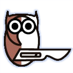

Visible Human Browsers
Dept. Anatomy & Embryology — LUMC, Leiden
Interactive anatomical cross-section browsers developed by D. Jansma & M.C. De Ruiter, based on datasets of the Visible Human Project and the LUMC. Three planes are displayed simultaneously; scrolling one plane adapts the others. No plugin required.
Complete Trunk — Cryosections
- Female, complete trunk
- 3 planes simultaneously (transversal, sagittal, frontal)
- Gross cryosections only
- ~15 MB image data
- Viewport: 836 × 1064 px
Complete Trunk — CT Scan
- Female, complete trunk
- 3 planes simultaneously (transversal, sagittal, frontal)
- CT sections only
- Viewport: 855 × 1274 px
Head & Neck
- Female, head and neck region
- 3 planes simultaneously (transversal, sagittal, frontal)
- Gross cryosections only
- ~27 MB image data
- Viewport: 680 × 1355 px